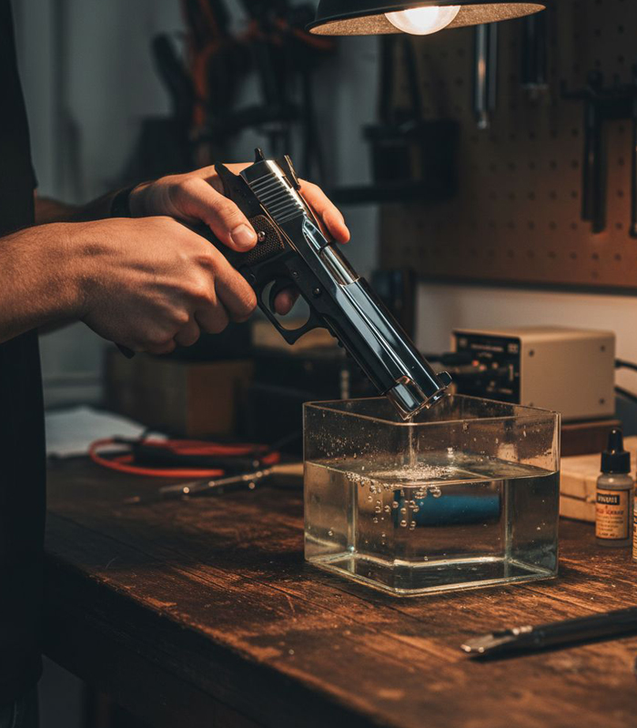
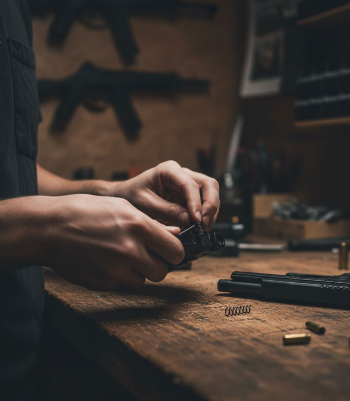
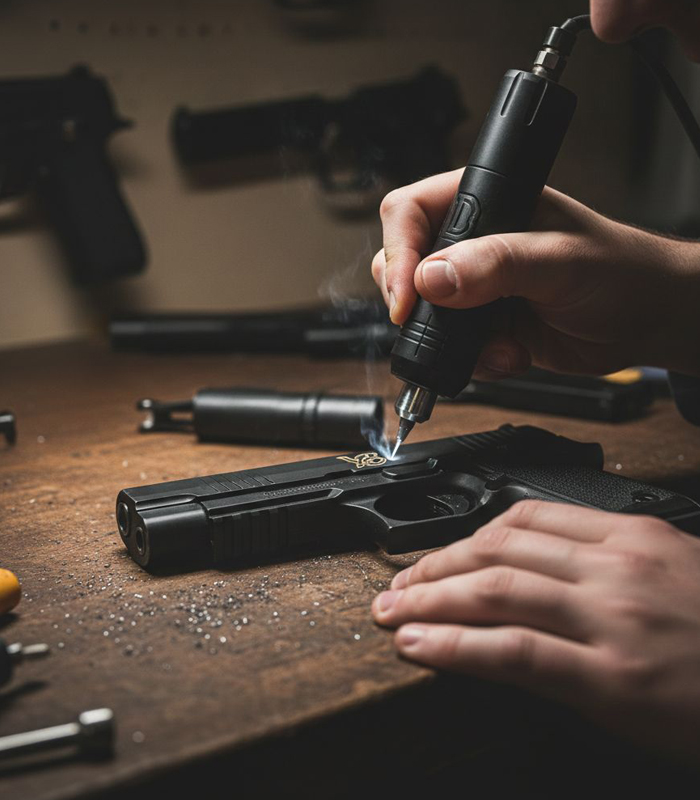
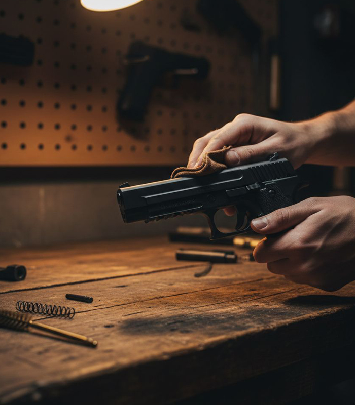

Silah Tamir Atölyesi, tabanca, tüfek, bıçak gibi silahlarınızı; estetik, güvenlik, işlevsellik ve dayanıklılık anlamında geliştiriyor.




Silah Tamir Atölyesi; tabanca, tüfek ve bıçaklarınızı estetik, güvenlik, işlevsellik ve dayanıklılık açısından profesyonel şekilde geliştirir.
Çelik yüzeylerde sertlik ve korozyon direnci sağlayarak silahınızın ömrünü uzatır ve şık bir görünüm kazandırır.
Aşınma, çizilme ve paslanmaya karşı yüksek direnç sağlar. Renk ve desen seçenekleriyle silahınızı kişiselleştirebilirsiniz.
Hafifletme, soğutma ve kavrama iyileştirmeleriyle performans ve estetik artırılır.
Silahınıza özel motif ve logo uygulamaları yapılır.
Yıllık ve periyodik bakımlar profesyonel şekilde yapılmaktadır.
“Silahım için teknik desteği, güler yüzlü ve dostane iletişimle sağladım.”
“STA ile çalışmak gerçekten güven verdi.”
“İşçilik ve iletişim kusursuzdu.”
STA Silah Tamir Atölyesi Olarak Buradayız!
Copyright © Tüm hakları saklıdır — Designed with love by Buniforma Kreatif Hizmetler